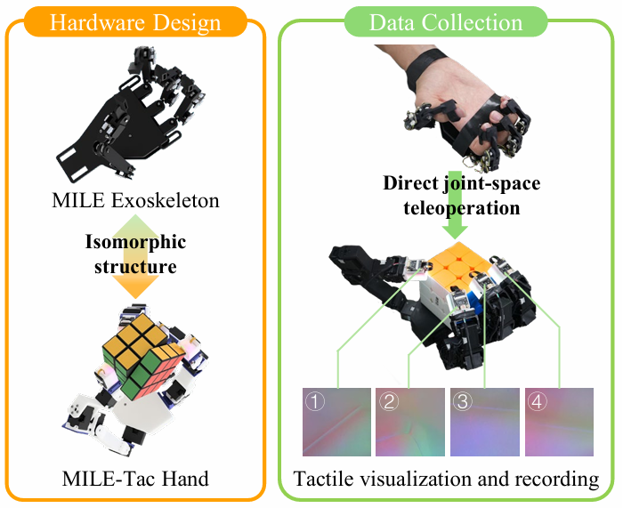
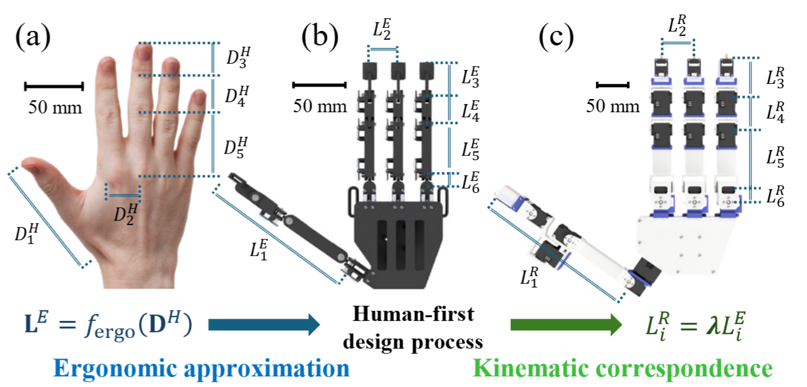
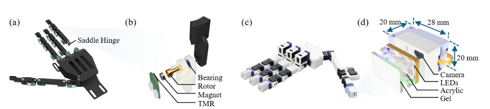
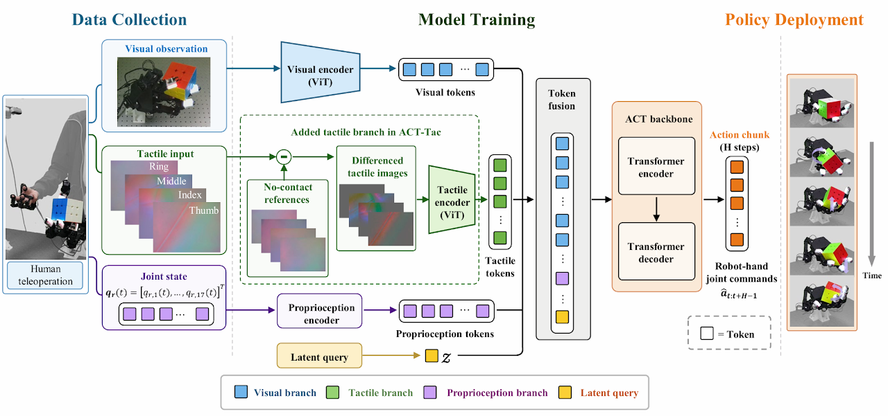
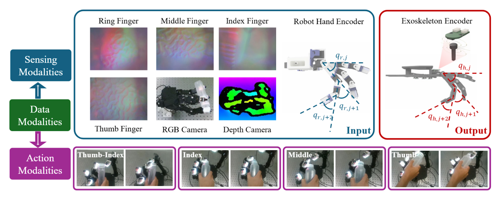
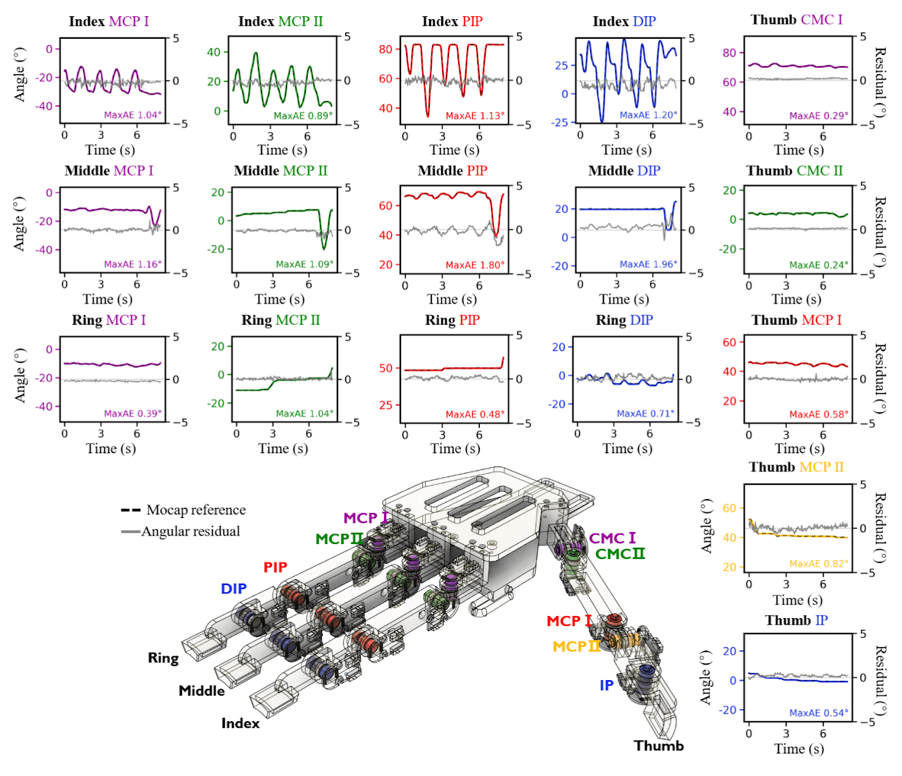

MILE / TELEOPERATION & MULTIMODAL LEARNING
Human-first design for dexterous data collection.
17-DoF joint-space teleoperation.
Without online task-space retargeting.
A wearable exoskeleton, a mechanically corresponding robotic hand, and four open-source visuotactile fingertip sensors. MILE records synchronized vision, fingertip contact images, and joint motion for learning contact-rich manipulation.
MILE / THE RESEARCH
IEEE/ASME Transactions on MechatronicsUnder review
A Mechanically Isomorphic Hand Exoskeleton and Visuotactile Robotic Hand for Data Collection in Dexterous Manipulation
1 State Key Laboratory of Mechanical System and Vibration,
School of Mechanical Engineering, Shanghai Jiao Tong University
2 Shanghai Key Laboratory of Intelligent Robotics, Shanghai Jiao Tong University
3 Shanghai Artificial Intelligence Laboratory
4 Humanoid Robot (Shanghai) Co., Ltd.
* Equal contribution † Corresponding authors

Hardware correspondence enables direct joint-space commands.
THE PAPER, IN BRIEF
Abstract
Dexterous robotic hands perform complex, contact-rich manipulation. Imitation learning provides a route to such skills, but collecting human demonstrations with accurate hand actions and rich tactile information remains a key bottleneck. We present MILE, a teleoperation-based data-collection system comprising the wearable MILE exoskeleton and the mechanically corresponding MILE-Tac robotic hand. Because human-hand anatomy and wearability place tighter constraints on the high-DoF wearable, our human-first design begins with the MILE exoskeleton, equipped with custom modular joint encoders for accurate joint-angle acquisition. We then design the MILE-Tac robotic hand to share the exoskeleton's selected kinematic topology and joint-axis arrangement while satisfying robot-side implementation constraints, and equip its fingertips with compact visuotactile sensor modules. This correspondence enables direct exoskeleton-to-robot joint-space command transfer without online task-space inverse-kinematics retargeting. During teleoperation, the system synchronously records task-specific visual observations, four fingertip visuotactile streams, robot-hand proprioception, and exoskeleton-derived action commands. In a four-task teleoperation benchmark, MILE achieved a mean success rate of 76%, compared with 28% and 8% for glove-based and vision-based baselines, respectively. For downstream imitation learning, we trained paired ACT and DP policies with and without tactile input on MILE-collected demonstrations. The tactile-input variants achieved higher success rates in all paired evaluations.
01 / THE SYSTEM
Human-first
hardware design.
Human-hand anatomy and wearability define the starting constraints. The robotic hand is then built around the selected exoskeleton topology and joint-axis arrangement.
THE DESIGN PRIORITY
Fit the wearable to the human. Carry its joint structure into the robot.
Human dimensions → wearable geometry → mechanically corresponding robotic hand
- 01 / HUMAN → WEARABLE
Prioritize anatomy and wearability.
Hand dimensions, finger motion, and clearance around the joints guide the four-finger exoskeleton. It measures 17 joint coordinates: five for the thumb and four each for the index, middle, and ring fingers. Shared joint and encoder modules support modular construction.
- 02 / WEARABLE → ROBOT
Preserve the joint correspondence.
MILE-Tac shares the exoskeleton’s selected kinematic topology and joint-axis arrangement. Corresponding structural dimensions are uniformly scaled to accommodate actuators, while the robotic fingertips integrate compact visuotactile sensors.
- 03 / MEASUREMENTS → COMMANDS
Transfer joint angles directly.
Measured exoskeleton angles become robot-hand commands through a fixed correspondence, coordinate-direction calibration, and zero-position offsets. This mapping requires no online task-space inverse kinematics or nonlinear optimization.
WHY THIS MATTERS
Establish correspondence in the hardware.
Direct joint-space transfer avoids the task-space retargeting step and its potential kinematic distortions, singularity handling, or out-of-workspace command clipping. The correspondence is between the exoskeleton and MILE-Tac; the wearable remains an ergonomic approximation of the human hand, with limited strap adjustment for different hand sizes.

OPEN HARDWARE / FINGERTIP VISUOTACTILE SENSOR
Open-source fingertip visuotactile sensors.
A camera inside each fingertip images the deformation of a soft gel under LED illumination, providing visual observations of contact. Four sensor streams are recorded alongside the other demonstration modalities.
The open-source release includes CAD files, a bill of materials, fabrication and assembly instructions, and LED-control firmware.
02 / MILE IN ACTION
See the hands
do the work.
From putting on the exoskeleton to autonomous manipulation. Explore the four supplementary films.
MILE system operation and data collection
Putting on the exoskeleton, teleoperation, and multimodal demonstration collection.
The video could not load. Try opening the MP4 directly or reloading the page.
03 / FROM DEMONSTRATION TO LEARNING
Capture the movement.
Keep the contact.

04 / DEMONSTRATION DATA
Dataset demonstration

05 / PRECISION VALIDATION
Exoskeleton precision validation

06 / THE EVIDENCE
Built for collecting
dexterous demonstrations.
In a four-task teleoperation benchmark, MILE achieved a higher mean success rate than the evaluated glove-based and vision-based systems.
Explore the experiments in the paperMEAN TELEOPERATION SUCCESS RATE
Means across the four evaluated teleoperation tasks under the study's experimental conditions. This is not an autonomous-policy success rate.
For downstream imitation learning, tactile-input variants of ACT and DP achieved higher success rates than their counterparts without tactile input in all paired evaluations reported in the paper.
BUILDING ON MILE?
Cite the work.
The paper and supplementary material are available on arXiv.
arXiv:2512.00324@misc{du2025mile,
title = {MILE: A Mechanically Isomorphic Hand Exoskeleton and Visuotactile Robotic Hand for Data Collection in Dexterous Manipulation},
author = {Jinda Du and Jieji Ren and Qiaojun Yu and Ningbin Zhang and Yu Deng and Xingyu Wei and Yufei Liu and Guoying Gu and Xiangyang Zhu},
year = {2025},
eprint = {2512.00324},
archivePrefix = {arXiv},
primaryClass = {cs.RO},
url = {https://arxiv.org/abs/2512.00324}
}WITH THANKS
Acknowledgements
The authors thank Yunfan Zhang, Qianyou Zhao, Yongyao Li, Xu Song, and Zheng Wang for advice on hardware design and learning policies; and Longyan Wu, Yueshi Dong, Jiapeng He, Nianzu Lv, Yuxuan Wu, Yutong Pei, Jinnuo Zhang, Zhenle Liu, Boyang Peng, and Junjie Xia for assistance with data collection and hardware renderings.